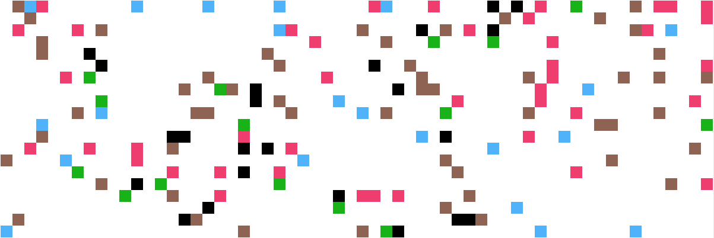
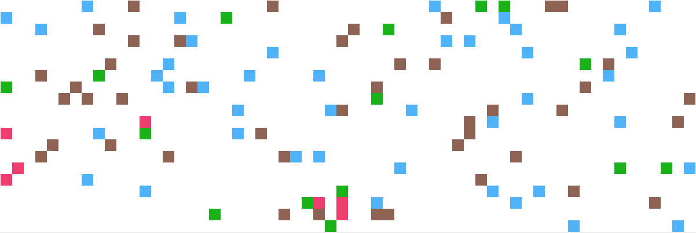
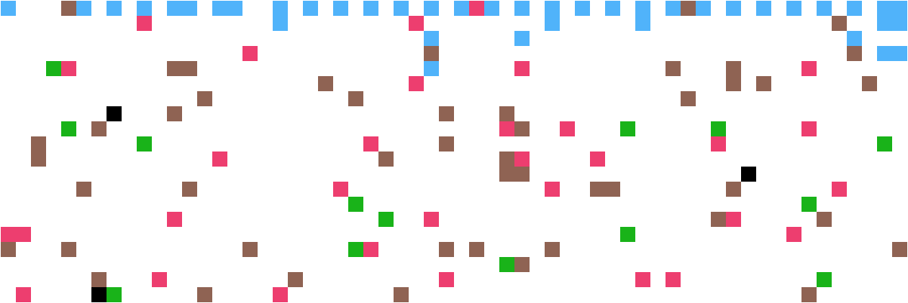
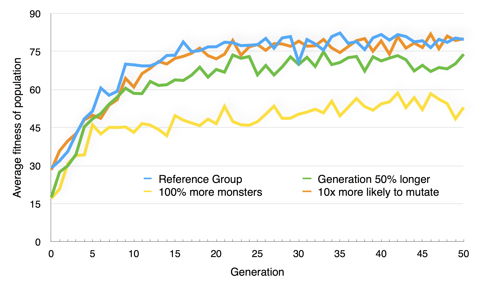

COSC 343: Assignment 2
Rory Mearns ID.3928873
Key:
- Creatures
- Dead Creatures
- Monsters
- Strawberries
- Mushrooms
State of world at the end of 1 genereation

State of world at the end of 50 genereations

State of world at the end of 50 genereations 'migrate north' behaviour exhibited

Graph showing the average population fitness over 50 generations
